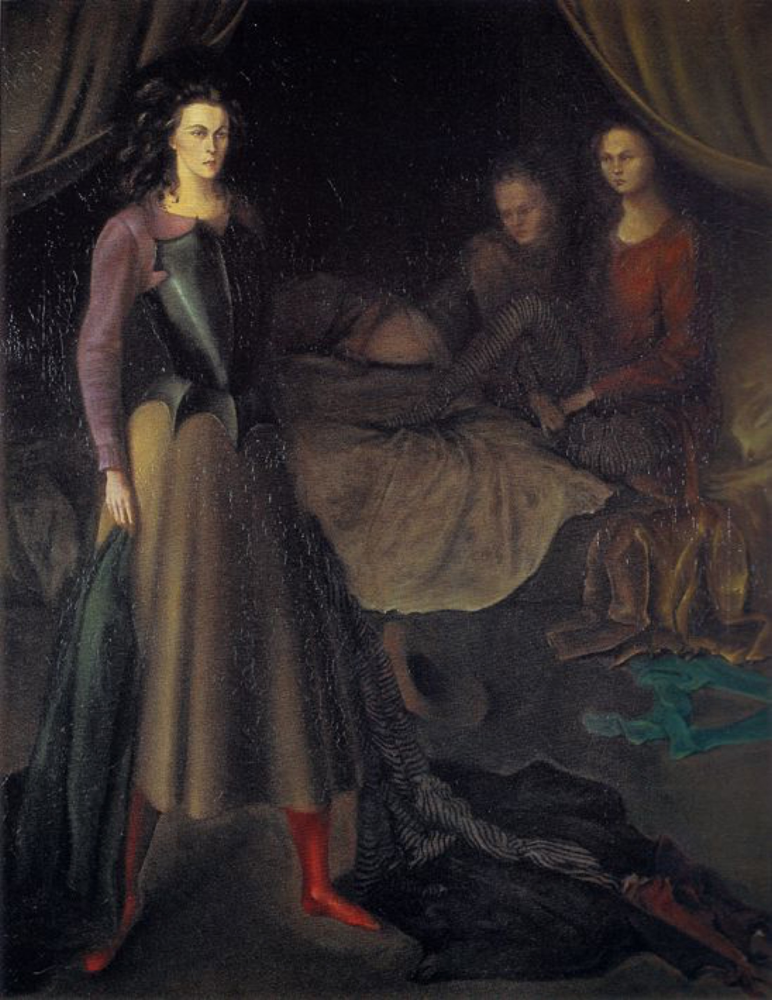

Lágrimas de Eros · Obra 106 de 124
La habitación (La Chambre noire)
Leonor Fini (1939)

Delante, una mujer de pie con coraza sobre un vestido largo; al fondo, dos muchachas en una cama con dosel. El sitio oficial de la artista la titula «La Chambre noire» y la fecha en 1939; Bataille la llama «La habitación» y la fecha en 1941.
Lo que hace que destaque
Delante, una mujer de pie con coraza sobre un vestido largo; al fondo, dos muchachas en una cama con dosel. El sitio oficial de la artista la titula «La Chambre noire» y la fecha en 1939; Bataille la llama «La habitación» y la fecha en 1941.
Contexto histórico
Identificada comparando la lámina del libro con la imagen del sitio oficial.
Autoría y procedencia
Leonor Fini (1907-1996), pintora, diseñadora e ilustradora argentina-italiana afincada en París, figura destacada del surrealismo independiente con un imaginario de esfinges, androginia y metamorfosis.
En los libros
Las lágrimas de Eros, de Georges Bataille · Lámina de la p. 184
Ficha pendiente de contrastar con fuentes académicas.